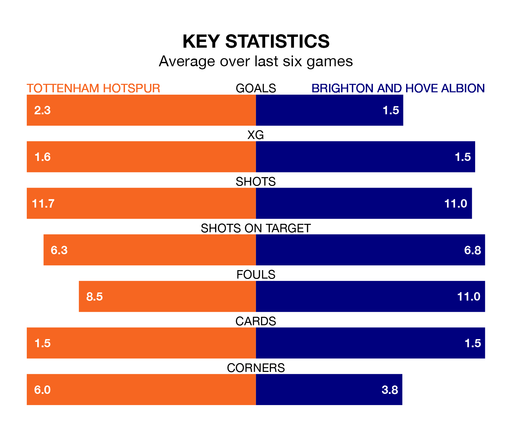

Tottenham Hotspur host Brighton and Hove Albion on Saturday at the Tottenham Hotspur Stadium in the Premier League.
In their last league match, on February 3, Spurs drew with Everton 2-2 away, with their goal scored by Richarlison (two).
Brighton won, 4-1 at home against Crystal Palace, with Facundo Buonanotte, Jack Hinshelwood, João Pedro and Lewis Dunk on the scoresheet.
With 49 goals in 23 games so far this season, Spurs are the league's joint-third-highest scorers with 2.1 goals per game. And they are conceding fewer than average, letting in 35 goals at a rate of 1.5 per game.
Brighton are also above average scorers, with 1.8 goals per game, compared to a league average of 1.6. They have conceded 1.7 goals per game.
In the last 10 years, Spurs and Brighton have played each other on 15 occasions. Spurs won 10 of them, Brighton four, and they drew once.
On average, Spurs scored 1.5 goals and Brighton 1.0 in those matches.
Their last meeting was on December 28, when Brighton won 4-2 at home.
In Heung-Min Son, Tottenham have one of the league's sharpest shooters so far this season. He has notched 12 goals in 20 appearances, to sit fourth in the scoring charts.
His goal rate of one every 142 minutes is quicker than that of Junqueira de Jesus, Albion's top scorer with a goal every 173 minutes, and a total of eight goals in 23 games.
The hosts are fifth in the table after 23 games, of which they have won 13 and drawn five, earning 44 points.
The away side are three places behind Spurs in eighth, with nine wins and eight draws putting them on 35 points.
Spurs are in reasonable form in the Premier League, with three wins and two draws from their last six games.
With two wins and three draws over that period, Brighton's form is slightly worse – they have taken nine points from 18, compared to Tottenham's 11.
Updated: 11:18 (UTC), 08/02/24